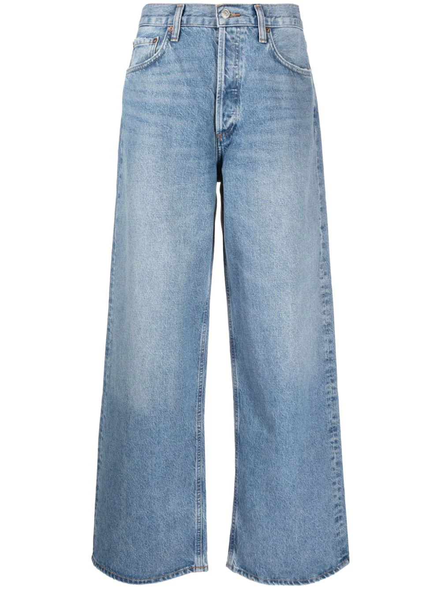

KHAITE
jeans anchos
Descripción
Azul claro, cierre con botones en la parte delantera, dos bolsillos diagonales en los laterales, dos bolsillos de parche en la parte posterior y corte ancho. Hecho en Estados Unidos Composición Algodón 100% Instrucciones de lavado Lavar a mano